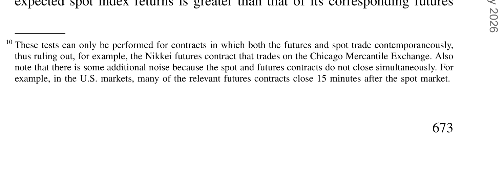
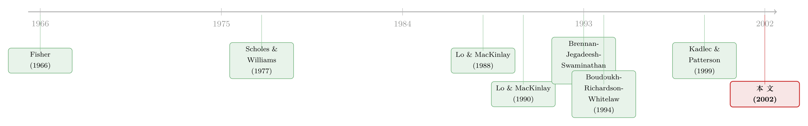

指数会「记仇」，期货却转头就忘——一道拆穿短期自相关的现货-期货实验
本文读的是 Ahn, Boudoukh, Richardson & Whitelaw (2002, Review of Financial Studies)：股票指数的短期收益有显著的正自相关（Russell 2000 日度高达 22%），可它对应的期货合约几乎没有（仅 6%）。作者用一个简单到近乎「狡猾」的现货-期货对照，把「行为/偏调整」和「陈旧价格」这两类长期纠缠不清的解释一刀切开——证据齐刷刷地指向微观结构里的陈旧价格，而非投资者的非理性。
1 一桩悬了二十年的「悬案」
先说一个让金融经济学家头疼了很久的现象。
把许多只股票打包成一个组合，再看它日度、周度的收益序列，你会发现一件「不该发生」的事：今天涨、明天大概率也涨。用统计的话讲，短期组合收益存在显著为正的自相关 (autocorrelation)。这不是个别样本的巧合——从 Hawawini (1980) 到 Lo and MacKinlay (1988)，这个模式跨样本期、跨国家地反复出现，而且和公司规模、成交量、分析师覆盖、机构持股都挂得上钩。
为什么说它「不该发生」？因为按照资产定价的常识，预期收益的变动是一件低频的事——它由投资机会集的缓慢变化驱动，不可能今天和明天就翻来覆去地变。可正自相关偏偏说：高频上，收益是可预测的。这就像你发现钟摆每一秒都在「记仇」，而物理学告诉你钟摆的周期是以小时计的。
于是，二十年里，解释这桩悬案的努力大致分成了两大阵营，而且谁也说服不了谁。
第一个阵营，叫偏调整 (partial adjustment)。 它说：市场里有一群股票，对全市场的信息反应「慢半拍」。可能是因为某些投资者非理性（行为模型），也可能是因为信息不对称叠加交易摩擦，套利者进不来 [Holden and Subrahmanyam (1992)、Brennan, Jegadeesh, and Swaminathan (1993)、Jones and Slezak (1999)]。组合的自协方差，恰好是成分股交叉自协方差的平均——只要有一批股票滞后反应，组合层面就会冒出正自相关。
第二个阵营，叫陈旧价格 (stale prices)。 它说：根本没那么玄乎，问题出在「价格是怎么被记下来的」。股指收盘价用的是每只成分股当天最后一笔成交价；但这些股票既不在同一时刻成交，也未必恰好在收盘那一秒成交。于是指数里混进了一批「过时」的价格——这就是经典的非同步交易 (nonsynchronous trading)，它会人为地制造出正自相关 [Fisher (1966)、Scholes and Williams (1977)、Lo and MacKinlay (1990a)]。（关于「收盘价到底准不准」这件事本身，可参见《收盘价到底准不准？》。）
两个阵营的麻烦在于：它们对指数收益的预测一模一样——都预测正自相关。光盯着指数序列本身，你永远分不清到底是投资者「真的」反应慢，还是只是价格被「记旧」了。这正是悬案二十年悬而未决的根本原因。
接着，一个自然的问题就是：有没有一个变量，能让这两种解释给出相反的预测？
2 真正关键的一步：把期货拉进来对照
本文最漂亮的地方，就是找到了这个变量——同一个指数对应的股指期货合约。
为什么期货能当「裁判」？因为现货指数 \(S\) 和它的期货 \(F\) 之间有一条无套利的硬约束。在持有成本模型 (cost-of-carry) 下，期货价就是现货价按利率（扣股息）复利出去：
$$ F_{t,T} = S_t\, e^{(i-d)(T-t)} $$
对它取对数差分，就得到期货收益和现货收益之间的关系（论文式 (1)）：
$$ r_{F_t} = r_{S_t} - i $$
这里 \(r_F\) 是期货的连续复合收益，\(r_S\) 是标的指数收益，\(i\) 是利率（已对股息率调整），\(T\) 是到期日。常数利率假设让 \(i-d\) 的变动项被抵消掉了。
现在见证奇迹的时刻到了。让我们把两个阵营分别套进这个框架，看它们对期货收益的自相关各自预测什么。
2.1 偏调整模型：指数和期货「同呼吸」
先看偏调整。本文挑了 Brennan, Jegadeesh, and Swaminathan (1993) 那一类模型：把指数拆成两半，一半是充分反应的股票（收益 \(r_{1t}\)），一半是滞后反应的股票（收益 \(r_{2t}\)）：
$$ r_{1t} = \pi_1 + \beta_1 m_t $$
$$ r_{2t} = \pi_2 + \beta_2 m_t + \gamma_2 m_{t-1} $$
其中 \(m_t\) 是零均值、i.i.d. 的市场因子，\(\gamma_2 m_{t-1}\) 这一项就是「慢半拍」——上一期的市场冲击，今天才被这批股票消化。设指数里充分反应的股票占比为 \(\theta\)，那么指数和期货的收益（论文式 (4)）是：
$$ r_{S_t} = \pi + \beta m_t + \gamma m_{t-1} $$
$$ r_{F_t} = r_{S_t} - i $$
其中 \(\gamma = (1-\theta)\gamma_2\)。在 beta 约等于 1 的近似下，这个序列的一阶自相关大约就是 \((1-\theta)\gamma_2\)——它取决于「慢半拍」的股票占多大比例、以及它们慢到什么程度。
关键在于：期货收益直接等于指数收益减去一个常数 \(i\)。 也就是说，期货原封不动地继承了指数的自相关。直觉上为什么？因为偏调整下的滞后效应是真实的——到期日那天的现货价确实包含这些滞后项，而期货作为「未来现货的现值」，贴现时也会把它们一并带上。结论很硬气：
在偏调整模型里，指数和期货应当呈现相同的自相关。
2.2 陈旧价格模型：期货「转头就忘」
再看陈旧价格。本文用了 Lo and MacKinlay (1990a) 的经典设定：每一期，每只股票有一个外生概率 \(\delta\) 它的价格没被更新（要么没交易，要么是别的市场特征）。于是「测出来的」等权指数收益是一个被几何衰减的旧信息污染过的序列：
$$ r_{S^o_t} = \pi + (1-\delta)\sum_{k=0}^{\infty}\delta^k\, m_{t-k} $$
而真实的指数收益其实干净得很（特质风险已被分散掉）：
$$ r_{S_t} = \pi + m_t $$
测出来的序列里塞进了 \(m_{t-1}, m_{t-2}, \dots\)，所以它有正自相关——这正是「虚假」的那一部分。那期货呢？在无套利下，期货反映的是到期日指数的现值（论文式 (2)）：
$$ F_{t,T} = PV(S^o_T)\, e^{i(T-t)} $$
由于非同步交易，到期日的指数也含陈旧价格，所以今天的期货价会沾上一点点未来的陈旧性。但 Lo and MacKinlay (1990a) 的模型告诉我们，这个污染的量级是 \(\delta^{T-t}\)——只要合约离到期还远，它微不足道。于是期货收益（论文式 (3)）就是：
把 a1 的因子看作 1，期货收益就约等于真实指数收益减 \(i\)。而真实收益是 i.i.d. 的——所以：
在陈旧价格模型里，期货收益几乎没有自相关，哪怕此时指数收益正相关得很厉害。
这就是全文的命门。两个阵营，第一次给出了相反的预测：偏调整说「指数=期货」，陈旧价格说「指数有、期货无」。 裁判终于能下判决了。
3 那「套利做不成」会不会救了偏调整？
读到这里，行为派一定不服气：凭什么假定套利能做成？现实里有交易成本——佣金、买卖价差，套利者根本不一定能把现货和期货扳到一起。如果套利做不成，期货也许就接不住指数的性质了，那 2.1 节的「同呼吸」结论不就崩了吗？
这是个好问题，也是本文必须正面回应的硬骨头。然后，作者把交易成本 \(\kappa\) 写进了模型。套利者每次进出指数要付加性成本 \(\kappa\)，往返就是 \(2\kappa\)。在没有套利的区间里，期货价被夹在一条「无套利带」里（论文式 (5)）：
$$ -\kappa\big(1+e^{i(T-t)}\big) \le F_{t,T} - S_t e^{(i-d)(T-t)} \le \kappa\big(1+e^{i(T-t)}\big) $$
只有当价差冲出这条带子，套利才会发动、把价格扳回来。期货价跑出带外的条件是（论文式 (6)）：
$$ |m_t| \ge \frac{\kappa\big(1+e^{i(T-t)}\big)}{(1-\theta)\gamma_2} $$
这个不等式里藏着三个推手：(i) 近期指数波动越大（\(|m_t|\) 越大）、(ii) 交易成本越低（\(\kappa\) 越小）、(iii) 指数自相关越强（\((1-\theta)\gamma_2\) 越大），就越容易冲出带外、触发套利。一旦冲出，即便期货交易者再老练，期货的预期收益也不再是常数，而要捕捉一部分指数的「非理性」（论文式 (7)）：
$$ E_t[r_{F_{t+1}}] = \pi - i + (1-\theta)\gamma_2\, m_t \pm \kappa\big(1+e^{i(T-t)}\big) $$
于是偏调整模型给出了一个可被证伪的细节预测：在带子里，期货预期收益是平的；一旦冲出带外，期货才开始「沾染」指数的正自相关。换句话说，在那些套利最容易做成的时段（低成本、大波动、高自相关），偏调整模型预测期货应当最像指数。
这就把球踢回到了数据：如果在「最有利于套利」的条件下，期货依然和指数大相径庭，那偏调整模型就站不住脚了。
4 数据怎么说
作者的数据覆盖 15 个国家、24 个股指及其对应的期货合约——既有美国的 S&P 500、Russell 2000，也有日本的 TOPIX、英国的 FTSE 250。这是个聪明的设计：国际市场之间的横截面相关性其实很低，等于给同一个假说提供了一批相互独立的检验样本。
主要事实摆出来，分量很足：
第一，含不流动股票的指数，自相关明显为正，可期货却接近零。 最干净的例子就是 Russell 2000：日度收益自相关 22%，而它的期货合约只有 6%。这个差距在经济上和统计上都显著。TOPIX、FTSE 250 也是同样的模式——它们都装着大量交易稀疏的小股票。
第二，交易成本解释不了这个差距。 即便只看那些「最有利于现货-期货套利」的时段（对应第 3 节里冲出带外的条件），自相关的差距几乎纹丝不动。按偏调整模型的预测，这时期货本该最像指数才对——可它没有。这是直接打在偏调整模型脸上的一记。
第三，成交量是「显影液」。 在普遍高成交量的时段，现货指数的自相关急剧下降；而期货的性质几乎不随成交量变化。这恰恰是陈旧价格的指纹——成交量一上来，非同步交易的问题就缓解了，指数里的「旧价格」被冲刷掉，虚假自相关自然回落；而期货本就没靠陈旧价格吃饭，自然无动于衷。
作者用回归把这些对照系统地做了一遍，逐合约估计（论文式 (9)）。结果与上面的叙事一致：期货收益对滞后信息的载荷远低于现货指数，且这种差异在调整套利条件后依旧稳健。

Table 3: presents the regression results from Equation (9) for each contract
把三条事实串起来，判决就清楚了：短期组合自相关的主因，是陈旧价格这类微观结构偏差，而不是投资者的非理性或慢半拍。 这也和 Kadlec and Patterson (1999) 校准日内数据后的结论遥相呼应——非同步交易能解释小股票组合日度自相关的 85%、随机组合的 52%、大股票组合的 36%。不是全部，但绝对是大头。
5 文献脉络
把这条线捋一遍，能更清楚地看到本文站在哪儿。
最早，Fisher (1966) 就指出指数构造里有「平滑」问题，Scholes and Williams (1977) 则在估计 beta 时正式处理非同步交易。真正把短期自相关推上风口浪尖的，是 Lo and MacKinlay (1988)——他们的方差比检验让「股价不是随机游走」成了一桩公案，并把自相关和公司规模挂上了钩。紧接着，Lo and MacKinlay (1990a) 给出了非同步交易的计量模型（也就是本文第 2.2 节的骨架）。

另一边，行为/信息派的代表是 Brennan, Jegadeesh, and Swaminathan (1993)——用分析师覆盖把股票分成「快」「慢」两组，给偏调整模型提供了微观基础（本文第 2.1 节正是借了它的设定）。Boudoukh, Richardson, and Whitelaw (1994) 那篇《三所学校的故事》，已经在用指数组合（如 S&P 500 与 NYSE 的组合）启发式地论证现货与期货性质应当不同——但只是启发式的、样本短、指数少。到 Kadlec and Patterson (1999)，非同步交易的解释力被精确校准。
本文 (2002) 的位置就很清楚了：它把 BRW (1994) 的启发式直觉，升级成一个有明确理论预测、又能跨国独立检验的完整框架，第一次让现货-期货对照真正充当了区分两大阵营的「裁判」。（顺带一提，「测出来的自相关有多少是流动性/陈旧价格幻觉」这个主题，在动量研究里也有回声，可参见《动量到底是谁干的？》与《动量利润的「纸面富贵」》。）
6 评论与延伸（Q&A + 研究方向）
(a) 几个可能的疑问
Q：偏调整和陈旧价格，本质区别到底在哪？
区别在于「滞后是不是真的」。偏调整里，滞后反应是真实的价格变动——到期日的现货价确实含这些滞后项，所以无套利会让期货一并继承。陈旧价格里，滞后只是记账的幻觉——真实价格早就调整完了，只是指数用了旧的成交价。前者期货有自相关，后者期货没有。这一「真/假」之分，正是整篇文章的杠杆支点。
Q：为什么期货能「免疫」于陈旧价格？它不也得靠现货定价吗？
因为期货反映的是到期日现货的现值，而陈旧性对当下期货价的污染只有 \(\delta^{T-t}\) 的量级。合约离到期还远时，这个数趋近于零。所以期货收益约等于「真实」现货收益减利率，而真实收益是 i.i.d. 的——没有自相关的来源。
Q：用高成交量时段的对照来论证，会不会本末倒置？成交量本身就和收益相关。
这是合理的担忧。但作者的逻辑是非对称的：成交量上升时，现货自相关塌掉、期货纹丝不动。如果是某种与成交量相关的「真实」预期收益变动，它没理由只影响现货、不碰期货。这种「只打一边」的模式，恰恰是陈旧价格（而非偏调整）的特征。
Q：交易成本那条「无套利带」会不会其实救了偏调整？
作者正是为此把交易成本写进模型，并预测：在最有利于套利的时段（低成本、大波动、高自相关），期货应当最像指数。数据却显示差距几乎不变。所以「套利做不成」这条退路被堵死了。
Q：Russell 2000 的 22% vs 6%，这个差距经济上算大吗？
很大。22% 的日度自相关意味着指数收益里有相当可观的可预测成分；而期货只有 6%，接近其无套利下应有的「近零」水平。两者的差，统计与经济上都显著，且在 15 国 24 个指数里反复出现——不是单一市场的偶然。
Q：这是不是说短期自相关「不存在」、不能交易？
不。它真实地存在于指数报价里，但它主要是陈旧价格制造的幻象——你没法按这些「旧价」真正成交一笔像样的量。也就是说，它不代表可实现的套利机会，而是市场摩擦的影子。
(b) 几个可能的研究问题与提案
1. 把这套现货-期货裁判搬到公司债 ETF 上。
【经济故事】公司债本身交易稀疏、报价陈旧问题极重，而公司债 ETF（如 LQD、HYG）有连续的二级市场价格，类似「期货」角色。ETF 与其 NAV 之间的自相关差异，或许能像本文一样，把信用市场短期可预测性里的「陈旧价格」成分剥离出来。 【可行性】中。数据可得（TRACE 债券成交 + ETF 高频价 + 每日 NAV），识别策略直接移植本文逻辑；难点是 ETF 申赎套利的成本结构比股指期货复杂，需要小心刻画「无套利带」。
2. 外资持有比例如何调节指数的陈旧价格成分。
【经济故事】外资集中、时区错配的市场（如新兴市场的某些指数），收盘时的非同步交易可能更严重。若能用外资可投资度 (investability) 作为横截面变量，检验「外资越多→陈旧价格自相关越强 / 越弱」，可把微观结构和投资者结构连起来。 【可行性】中。可投资度数据有（如 S&P/IFC），指数与期货数据需逐市场拼。难点是外资比例与流动性内生，需要找制度性冲击（如可投资度扩容事件）做识别。
3. 高成交量「显影」效应的事件研究版本。
【经济故事】本文用平均成交量时段做对照，但可以更干净：围绕指数成分股的集中放量事件（如纳入/剔除、财报季）做事件窗，看现货自相关是否在放量后骤降、期货是否纹丝不动。这能把「成交量→陈旧价格→自相关」的因果链锁得更紧。 【可行性】高。成分股调整日、财报日都有明确日期，事件研究框架成熟，数据门槛低。
4. 用更细的微观结构数据直接量化「最后一笔成交距收盘多久」。
【经济故事】本文把陈旧性当作外生概率 \(\delta\)。其实可以用日内成交数据，直接测每只成分股「最后一笔成交时间距收盘的间隔」，构造一个实测的陈旧度指标，再看它能否解释指数-期货自相关差的横截面。 【可行性】中高。日内数据（TAQ 类）可得，指标构造清楚；难点是把个股陈旧度聚合到指数层面的权重处理。
5. 在公司债市场检验「真实滞后 vs 记账滞后」。
【经济故事】信用市场常被指「反应慢」——但这究竟是债券价格真的慢，还是只是报价陈旧？若能找到同一发行人「流动 vs 不流动」两只债券（参见《同一个发行人的两只债券》的思路），用 CDS 或股票当「期货」式的快速基准对照，或可复刻本文的裁判逻辑。 【可行性】中。需要匹配同发行人多券种 + CDS 报价，数据拼接成本高，但识别思路干净。
7 我的判断
这篇文章的贡献，不在于它发现了什么新异象，而在于它把一个旧异象逼到了非黑即白的境地。短期自相关的两类解释扯了二十年，谁都拿不出能让对方闭嘴的证据，原因是大家都只盯着指数序列本身——而指数序列对两种机制是「兼容」的。作者的高明，是意识到无套利关系会让期货在两种机制下表现迥异，于是凭空多出一个能区分二者的维度。这种「找一个让竞争假说给出相反预测的变量」的思路，是实证设计里最值得学的一课。
对识别的担忧，我有两点。其一，整套逻辑高度依赖常数利率与股息率的假设来抵消 \(i-d\) 的变动项；虽然作者论证这些变量比指数本身稳定得多，但在利率剧烈波动的样本期（或某些新兴市场），这个简化是否依然无害，值得更正式的稳健性检验。其二，「高成交量时段」与「有利套利时段」都是内生的条件——成交量、波动率、自相关三者纠缠在一起，作者的对照虽然在符号上很有说服力，但严格的因果识别仍需要外生冲击（比如指数成分调整、期货合约上市这类制度事件）来加固。
后续我最想看到的，是把这套现货-期货（或现货-衍生品）裁判系统地推广到信用市场：公司债的「反应慢」长期被当作行为故事讲，但它有多少其实只是 TRACE 报价的陈旧？如果能像本文一样，用一个快速基准把「真实滞后」和「记账滞后」分开，那对整个信用市场的可预测性文献，都会是一次必要的祛魅。
参考文献
Atchison, M., K. Butler, and R. Simonds (1987). Nonsynchronous Security Trading and Market Index Autocorrelation. Journal of Finance 42, 533–553.
Boudoukh, J., M. Richardson, and R. Whitelaw (1994). A Tale of Three Schools: Insights on Autocorrelations of Short-Horizon Stock Returns. Review of Financial Studies 7, 539–573.
Brennan, M., N. Jegadeesh, and B. Swaminathan (1993). Investment Analysis and the Adjustment of Stock Prices to Common Information. Review of Financial Studies 6, 799–824.
Chordia, T., and B. Swaminathan (2000). Trading Volume and Cross-Autocorrelations in Stock Returns. Journal of Finance 55, 913–935.
Fisher, L. (1966). Some New Stock Market Indexes. Journal of Business 39, 191–225.
Kadlec, G., and D. Patterson (1999). A Transactions Data Analysis of Nonsynchronous Trading. Review of Financial Studies 12, 609–630.
Lo, A., and C. MacKinlay (1988). Stock Market Prices Do Not Follow Random Walks: Evidence from a Simple Specification Test. Review of Financial Studies 1, 41–66.
Lo, A., and C. MacKinlay (1990a). An Econometric Analysis of Nonsynchronous Trading. Journal of Econometrics 45, 181–211.
MacKinlay, C., and K. Ramaswamy (1988). Index-Futures Arbitrage and the Behavior of Stock Index Futures Prices. Review of Financial Studies 1, 137–158.
Scholes, M., and J. Williams (1977). Estimating Betas from Nonsynchronous Data. Journal of Financial Economics 5, 309–327.